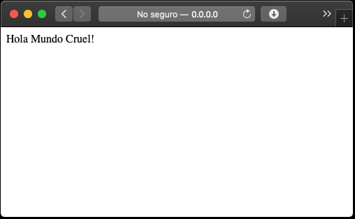
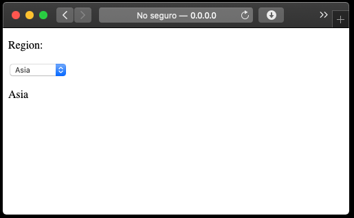
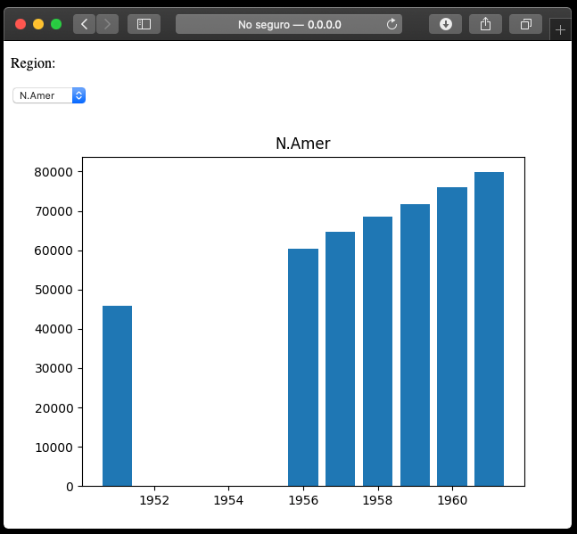

Creación de un dashboard interactivo usando Flask¶
60 min | Última modificación: Febrero 27, 2020.
Version 1 — App mínima¶
[1]:
!mkdir -p 1
[2]:
%%writefile 1/app.py
from flask import Flask
app = Flask(__name__) # nombre del modulo o paquete
@app.route('/') # indica que dirección dispara la función
@app.route('/index')
def hello():
return "Hola Mundo Cruel!"
if __name__ == "__main__":
app.run(host='0.0.0.0', debug=True)
Writing 01/app.py

Version 2 — Plantilla¶
[6]:
!mkdir -p 2
!mkdir -p 2/templates
[18]:
%%writefile 2/templates/index.html
<!DOCTYPE html>
<html lang="en">
<head>
<meta charset="utf-8">
<title>Telephones</title>
</head>
<body>
<!--- Menu de seleccion al lado izquierdo --->
<nav>
<form id='myDialog' method="POST">
<p>Region:</p>
<!--- onchange llama la función cuando el elemento cambia --->
<select id="region" name="region" onchange="submitData()">
<option value="N.Amer">N.Amer</option>
<option value="Europe">Europe</option>
<option value="Asia">Asia</option>
<option value="S.Amer">S.Amer</option>
<option value="Oceania">Oceania</option>
<option value="Africa">Africa</option>
<option value="Mid.Amer">Mid.Amer</option>
</select>
</form>
</nav>
<!--- imprime la región seleccionada --->
{% for message in get_flashed_messages() %}
<p> {{ message }} </p>
{% endfor %}
<!--- remite la información del dialogo al servidor --->
<script>
function submitData() {
document.getElementById("myDialog").submit()
}
</script>
</body>
</html>
Overwriting 02/templates/index.html
[21]:
%%writefile 2/app.py
from flask import Flask, request, flash, render_template
app = Flask(__name__)
app.config['SECRET_KEY'] = 'you-will-never-guess'
@app.route('/', methods=('GET', 'POST'))
@app.route('/index', methods=('GET', 'POST'))
def index():
selected = None
if request.method == 'POST':
selected = request.form['region']
flash(selected)
return render_template('index.html')
if __name__ == "__main__":
app.run(host='0.0.0.0', debug=True)
Overwriting 02/app.py

Version 3 — Lógica del menú y datos.¶
[22]:
!mkdir -p 3
!mkdir -p 3/templates
[25]:
%%writefile 3/app.py
#---------------------------------------------------------------------------
#
# Datos
#
import pandas as pd
data = [[45939, 21574, 2876, 1815, 1646, 89, 555],
[60423, 29990, 4708, 2568, 2366, 1411, 733],
[64721, 32510, 5230, 2695, 2526, 1546, 773],
[68484, 35218, 6662, 2845, 2691, 1663, 836],
[71799, 37598, 6856, 3000, 2868, 1769, 911],
[76036, 40341, 8220, 3145, 3054, 1905, 1008],
[79831, 43173, 9053, 3338, 3224, 2005, 1076]]
data = pd.DataFrame(
data = data,
index = [1951, 1956, 1957, 1958, 1959, 1960, 1961],
columns = ['N.Amer', 'Europe', 'Asia', 'S.Amer', 'Oceania', 'Africa', 'Mid.Amer']
)
#---------------------------------------------------------------------------
from flask import Flask, request, flash, render_template
app = Flask(__name__)
app.config['SECRET_KEY'] = 'you-will-never-guess'
@app.route('/', methods=('GET', 'POST'))
@app.route('/index', methods=('GET', 'POST'))
def index():
selected = data.columns.tolist()[0]
if request.method == 'POST':
selected = request.form['region']
flash(selected)
return render_template(
'index.html',
regions=data.columns.tolist(), # nombres de las regiones
selected=selected) # columna seleccionada)
if __name__ == "__main__":
app.run(host='0.0.0.0', debug=True)
Overwriting 03/app.py
[24]:
%%writefile 3/templates/index.html
<!DOCTYPE html>
<html lang="en">
<head>
<meta charset="utf-8">
<title>Telephones</title>
</head>
<body>
<!--- Menu de seleccion al lado izquierdo --->
<nav>
<form id='myDialog' method="POST">
<p>Region:</p>
<!--- onchange llama la función cuando el elemento cambia --->
<select id="region" name="region" onchange="submitData()">
{% for i in regions %}
{% if i == selected %}
<option value="{{ i }}" selected>{{ i }}</option>
{% else %}
<option value="{{ i }}">{{ i }}</option>
{% endif %}
{% endfor %}
</select>
</form>
</nav>
<!--- imprime la región seleccionada --->
{% for message in get_flashed_messages() %}
<p> {{ message }} </p>
{% endfor %}
<!--- remite la información del dialogo al servidor --->
<script>
function submitData() {
document.getElementById("myDialog").submit()
}
</script>
</body>
</html>
Writing 03/templates/index.html

Version 4 — Cómputos y gráfica¶
[26]:
!mkdir -p 4
!mkdir -p 4/templates
!mkdir -p 4/static
[102]:
%%writefile 4/app.py
#---------------------------------------------------------------------------
#
# Datos
#
import pandas as pd
import io
data = [[45939, 21574, 2876, 1815, 1646, 89, 555],
[60423, 29990, 4708, 2568, 2366, 1411, 733],
[64721, 32510, 5230, 2695, 2526, 1546, 773],
[68484, 35218, 6662, 2845, 2691, 1663, 836],
[71799, 37598, 6856, 3000, 2868, 1769, 911],
[76036, 40341, 8220, 3145, 3054, 1905, 1008],
[79831, 43173, 9053, 3338, 3224, 2005, 1076]]
data = pd.DataFrame(
data = data,
index = [1951, 1956, 1957, 1958, 1959, 1960, 1961],
columns = ['N.Amer', 'Europe', 'Asia', 'S.Amer', 'Oceania', 'Africa', 'Mid.Amer']
)
#---------------------------------------------------------------------------
from flask import Flask, request, flash, render_template, g, session, send_file
app = Flask(__name__)
app.config['SECRET_KEY'] = 'you-will-never-guess'
import matplotlib.pyplot as plt
@app.route('/', methods=['GET', 'POST'])
@app.route('/index', methods=('GET', 'POST'))
def index():
session['selected'] = data.columns.tolist()[0]
if request.method == 'POST':
session['selected'] = request.form['region']
flash(session['selected'])
return render_template(
'index.html',
regions=data.columns.tolist(), # nombres de las regiones
selected=session['selected']) # columna seleccionada)
@app.route('/plot0', methods=['GET'])
def plot0():
selected = session['selected']
plt.clf()
plt.bar(
x = list(data.index),
height = data[selected])
plt.title(selected)
plot_obj = io.BytesIO()
plt.savefig(plot_obj, format='png')
plot_obj.seek(0)
return send_file(
plot_obj,
attachment_filename='plot.png',
mimetype='image/png')
if __name__ == "__main__":
app.config['TEMPLATES_AUTO_RELOAD'] = True
app.jinja_env.auto_reload = True
app.run(host='0.0.0.0', debug=True)
Overwriting 4/app.py
[95]:
%%writefile 4/templates/index.html
<!DOCTYPE html>
<html lang="en">
<head>
<meta charset="utf-8">
<title>Telephones</title>
</head>
<body>
<!--- Menu de seleccion al lado izquierdo --->
<nav>
<form id='myDialog' method="POST">
<p>Region:</p>
<!--- onchange llama la función cuando el elemento cambia --->
<select id="region" name="region" onchange="submitData()">
{% for i in regions %}
{% if i == selected %}
<option value="{{ i }}" selected>{{ i }}</option>
{% else %}
<option value="{{ i }}">{{ i }}</option>
{% endif %}
{% endfor %}
</select>
</form>
</nav>
<!--- Grafica --->
<div>
<img src="http://0.0.0.0:5000/plot0" />
</div>
<!--- imprime la región seleccionada --->
{% for message in get_flashed_messages() %}
<p> {{ message }} </p>
{% endfor %}
<!--- remite la información del dialogo al servidor --->
<script>
function submitData() {
document.getElementById("myDialog").submit()
}
</script>
</body>
</html>
Overwriting 4/templates/index.html

Ejercicio.— Agregar formato usando CSS.
Ejercicio.— Construya un demo similar a https://shiny.rstudio.com/gallery/widget-gallery.html